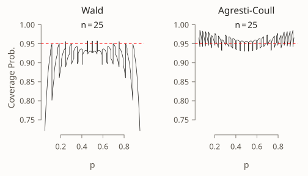
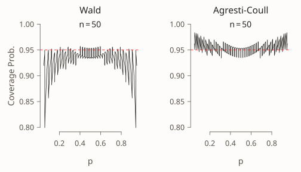
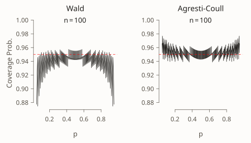
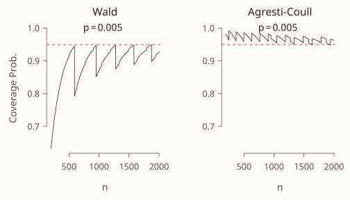
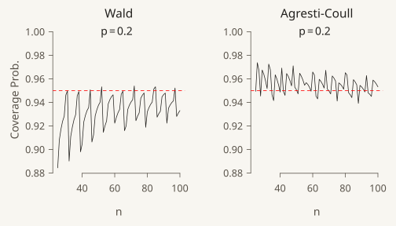

Inference & uncertainty 4 October 2021 9 min
Don’t Use the Textbook CI for a Proportion
In a previous post I showed an example in which the “textbook” confidence interval for a proportion performs poorly despite a fairly large sample size. My aim in that post was to convince you that the oft-repeated advice concerning \(n > 30\) and the central limit theorem is worthless. Today I’d like to convince you of something even more subversive: the textbook confidence interval for a proportion is absolutely terrible and you should never use it or teach it under any circumstances. Fortunately there’s a simple fix. For a 95% interval, simply add four “fake” observations to your dataset, two successes and two failures, and then follow the textbook recipe for this “artificially augmented” dataset.
This post draws on two very approachable papers from around the turn of the millennium: Agresti & Coull (1998) and Brown, Cai, & DasGupta (2001). More theoretically-inclined readers may also enjoy a companion paper to the latter reference: Brown, Cai, & DasGupta (2002).
1 The Wald Confidence Interval
This is what you learned in your introductory statistics course: it’s the textbook interval I alluded to above. Let \(X_1, ..., X_n \sim \text{iid Bernoulli}(p)\) and define \(\widehat{p} = \sum_{i=1}^n X_i/n\). By the central limit theorem \[ \frac{\widehat{p} - p}{\sqrt{\widehat{p}(1 - \widehat{p})/n}} \rightarrow_d N(0,1) \] leading to the so-called “Wald” 95% confidence interval for a population proportion: \[ \widehat{p} \pm 1.96 \times \sqrt{\frac{\widehat{p}(1- \widehat{p})}{n}}. \]
2 An Obvious Objection to the Wald Interval
Suppose we want to estimate the proportion of Trump voters in Berkeley California. We decide to carry out a poll of 25 randomly-sampled Berkeley residents and find that none of them voted for Trump. Then \(\widehat{p} = 0\) and the Wald confidence interval is \[ 0 \pm 1.96 \times \sqrt{0 \times (1 - 0) / 25} \] in other words \([0, 0]\). Clearly this is absurd: unless there are literally zero Trump voters in Berkeley, we can be certain that this interval does not contain the true population parameter. A similar problem would emerge if we instead tried to estimate the proportion of Biden voters in Berkeley: if \(\widehat{p} = 1\) then our confidence interval would be \([1,1]\). This too is absurd. More broadly, the Wald confidence interval is extremely poorly behaved in situations where \(p\) is close to zero or one. You may have encountered a suggestion that \(np(1-p)\) should be at least 5 for the Wald interval to perform well. There’s something to this advice, as we’ll see below, but it’s not sufficient. More to the point: we don’t know \(p\) in practice so there is no way to apply this rule!
3 The Agresti-Coull Interval
Here’s a quick and dirty fix that is surprisingly effective. Simply add four “fake” observations to the dataset: two zeros (failures) and two ones (successes). The 95% Agresti-Coull confidence interval is constructed in exactly the same way as 95% Wald interval only using this “artificially augmented” dataset rather than the original one. In other words, if the sample size is \(n\) and the sample proportion is \(\widehat{p}\), then Agresti-Coull interval is constructed from \(\widetilde{n} = n + 4\) and \[ \widetilde{p} \equiv \frac{n \widehat{p} + 2}{n + 4} = \frac{\left(\sum_{i=1}^n X_i\right) + 0 + 0 + 1 + 1}{n + 4} \] yielding \[ \widetilde{p} \pm 1.96 \times \sqrt{\frac{\widetilde{p}(1 - \widetilde{p})}{\widetilde{n}}}, \quad \widetilde{n} \equiv n + 4, \quad \widetilde{p} \equiv \frac{n\widehat{p}+ 2}{n + 4}. \] Note that this “add four fake observations” adjustment is specific to the case of a 95% confidence interval. In a future post, I’ll explain where the rule comes from and how to generalize it to other confidence levels. For now, let’s ask ourselves a more fundamental question: does this adjustment make sense? “Wait!” I can hear you object: “adding fake observations introduces a bias!” Indeed it does. Since \(\widehat{p}\) is an unbiased estimator of \(p\), \[ \begin{aligned} \text{Bias}(\widetilde{p}) &\equiv \mathbb{E}[\widetilde{p} - p] = \mathbb{E}\left[ \frac{n \widehat{p} + 2}{n + 4}\right] - p\\ &= \frac{np + 2}{n+4} - p = (1 - 2p) \left(\frac{2}{n + 4}\right). \end{aligned} \] If \(p = 1/2\) this estimator is unbiased. Otherwise, the addition of four fake observations pulls \(\widetilde{p}\) away from \(\widehat{p}\) and towards \(1/2\): when \(p>1/2\) the estimator is downward-biased, and when \(p < 1/2\) it is upward-biased. The smaller the sample size, the larger the bias.
Let’s try this out on our Trump/Berkeley example. Adding four fake observations gives a sample proportion of \[ \widetilde{p} = \frac{n \widehat{p} + 2}{n + 4} = \frac{25 \times 0 + 2}{25 + 4} = \frac{2}{29} \approx 0.07 \] in the augmented dataset and hence a 95% confidence interval of approximately \[ 0.07 \pm 1.96 \times \sqrt{\frac{0.07 \times (1 - 0.07)}{29}} = [-0.02, 0.16]. \] Of course a proportion can’t be negative, so we would report \([0, 0.16]\). This seems like a much more reasonable summary of our uncertainty than reporting an interval of \([0,0]\), but does it really work? Does adding fake data really improve things?
4 Comparing the Wald and Agresti-Coull Intervals
To answer the question raised at the end of the last paragraph, let’s use R to calculate the coverage probability of the Wald and Agresti-Coull intervals for a range of values of the sample size \(n\) and true population proportion \(p\). In other words, let’s see how often these intervals actually contain the true population parameter \(p\). If they are bona fide 95% confidence intervals, this should occur with probability close to 0.95. One way to carry out this exercise is via Monte Carlo simulation: repeatedly drawing randomly generated datasets and counting the proportion of our resulting confidence intervals that contain the true value of \(p\). In this example, however, it turns out that there’s a quick and easy way to calculate exact coverage probabilities using the R function dbinom. For full details, see the R code appendix at the end of the post.
To begin, let’s compare the two confidence intervals over a grid of values for the true population proportion \(p\) while holding the sample size \(n\) fixed. When \(n = 25\) we obtain the following:
In each of these plots, along with those that follow, the solid black curve gives the coverage probability while the dashed red line passes through \(0.95\) on the vertical axis. A well-behaved confidence interval should produce a black curve that is close to the dashed red line. To make a long story short: the Agresti-Coull interval is quite well-behaved while the Wald interval is a disaster. For values of \(p\) close to zero or one, the Wald interval is extremely erratic: its coverage probability can be exactly 95% or far below depending on the precise value of \(p\). Moreover, the Wald interval systematically undercovers. There are very few values of \(p\) for which its coverage probability is 0.95 or higher and very many for which it is below this level. In stark contrast, the Agresti-Coull interval at worst undercovers by around 0.01 or 0.02. In general its actual coverage probability is very close to 95%, although it does have a tendency to overcover for values of \(p\) that are close to zero or one. It turns out that there is nothing special about \(n = 25\). The same basic story holds for larger sample sizes, for example \(n=50\) and \(n = 100\).


So what do we make of the rule of thumb that the Wald interval will perform well if \(np(1-p)>5\)? Indeed, values of \(p\) that are close to zero or one present the biggest problems for this confidence interval. But like many traditional statistical rules of thumb, this one leaves much to be desired. Suppose that \(n = 1270\) and \(p = 0.005\). In this case \(np(1-p)\) equals 6.3 but the coverage probability of the Wald interval is an unsatisfying 0.947 compared to 0.969 for the Agresti-Coull interval.
Because the central limit theorem is an asymptotic result, one that holds as \(n\) approaches infinity, we might hope that at least the performance of the Wald interval improves as the sample size grows. Alas, this is not always the case. The following plot compares the coverage of Wald and Agresti-Coull confidence intervals for \(p = 0.005\) as \(n\) increases from 200 to 2000. Note the pronounced “sawtooth” pattern in the Wald confidence interval. It improves steadily as the sample size grows only to jump precipitously downward, before beginning a steady upward climb followed by another jump. In contrast, the performance of the Agresti-Coull interval is fairly steady. While a bit less dramatic, a similar qualitative pattern holds for \(p=0.2\) as \(n\) increases from 25 to 100.


5 Conclusion
Friends don’t let friends use the Wald interval for a proportion. Fortunately there’s a simple alternative when you’re after a 95% confidence interval: add two successes and two failures to your dataset, then proceed as normal. I encourage you to use my R code to test out different values of \(p\) and \(n\), making your own comparisons of the Wald and Agresti-Coull intervals. In a future post, I’ll show you where the Agresti-Coull interval comes from, why it works so well, and how to generalize it to construct 90%, 99% and indeed arbitrary \((1 - \alpha) \times 100\%\) confidence intervals.
6 R Code Appendix
I wrote four R functions to generate the plots shown above: get_Wald_coverage() and get_AC_coverage() calculate the coverage probabilities of the Wald and Agresti-Coull confidence intervals, while plot_n_comparison() and plot_p_comparison() construct the plots comparing coverage probabilities across different values of the sample size \(n\) and true population proportion \(p\).
get_Wald_coverage <- function(p, n) {
#-----------------------------------------------------------------------------
# Calculates the exact coverage probability of a nominal 95% Wald confidence
# interval for a population proportion.
#-----------------------------------------------------------------------------
# p true population proportion
# n sample size
#-----------------------------------------------------------------------------
x <- 0:n
p_hat <- x / n
z <- qnorm(1 - 0.05 / 2)
SE <- sqrt(p_hat * (1 - p_hat) / n)
cover <- (p >= p_hat - z * SE) & (p <= p_hat + z * SE)
prob_cover <- dbinom(x, n, p)
sum(cover * prob_cover)
}
get_AC_coverage <- function(p, n) {
#-----------------------------------------------------------------------------
# Calculates the exact coverage probability of a nominal 95% Agresti-Coull
# confidence interval for a population proportion.
#-----------------------------------------------------------------------------
# p true population proportion
# n sample size
#-----------------------------------------------------------------------------
x <- 0:n
p_tilde <- (x + 2) / (n + 4)
n_tilde <- n + 4
z <- qnorm(1 - 0.05 / 2)
SE <- sqrt(p_tilde * (1 - p_tilde) / n_tilde)
cover <- (p >= p_tilde - z * SE) & (p <= p_tilde + z * SE)
prob_cover <- dbinom(x, n, p)
sum(cover * prob_cover)
}
plot_n_comparison <- function(n_seq, p) {
#-----------------------------------------------------------------------------
# Plots a comparison of coverage probabilities for Wald and Agresti-Coull
# nominal 95% confidence intervals for a population proportion over a grid of
# values for the sample size, holding the population proportion fixed.
#-----------------------------------------------------------------------------
# n_seq vector of values for the sample size
# p true population proportion
#-----------------------------------------------------------------------------
# Example:
# plot_n_comparison(n_seq = 25:100, p = 0.2)
#-----------------------------------------------------------------------------
wald <- sapply(n_seq, \(n) get_Wald_coverage(p, n))
AC <- sapply(n_seq, \(n) get_AC_coverage(p, n))
cover_min <- min(min(wald), min(AC))
cover_max <- max(max(wald), max(AC))
limits <- c(cover_min, 1)
par(mfrow = c(1, 2))
plot(n_seq, wald, type = 'l', xlab = 'n', ylim = limits, main = 'Wald',
ylab = 'Coverage Prob.')
text(mean(n_seq), 1, labels = bquote(p == .(p)))
abline(h = 0.95, lty = 2, col = 'red')
plot(n_seq, AC, type = 'l', xlab = 'n', ylim = limits,
main = 'Agresti-Coull', ylab = '')
text(mean(n_seq), 1, labels = bquote(p == .(p)))
abline(h = 0.95, lty = 2, col = 'red')
par(mfrow = c(1, 1))
}
plot_p_comparison <- function(p_seq, n) {
#-----------------------------------------------------------------------------
# Plots a comparison of coverage probabilities for Wald and Agresti-Coull
# nominal 95% confidence intervals for a population proportion over a grid of
# values for the population proportion, holding sample size fixed.
#-----------------------------------------------------------------------------
# p_seq vector of values for the true population proportion
# n sample size
#-----------------------------------------------------------------------------
# Example:
# plot_p_comparison(my_p_seq, n = 25)
#-----------------------------------------------------------------------------
wald <- sapply(p_seq, \(p) get_Wald_coverage(p, n))
AC <- sapply(p_seq, \(p) get_AC_coverage(p, n))
cover_min <- min(min(wald), min(AC))
limits <- c(cover_min, 1)
par(mfrow = c(1, 2))
plot(p_seq, wald, type = 'l', xlab = 'p', ylim = limits, main = 'Wald',
ylab = 'Coverage Prob.')
text(0.5, 1, labels = bquote(n == .(n)))
abline(h = 0.95, lty = 2, col = 'red')
plot(p_seq, AC, type = 'l', xlab = 'p', ylim = limits,
main = 'Agresti-Coull', ylab = '')
text(0.5, 1, labels = bquote(n == .(n)))
abline(h = 0.95, lty = 2, col = 'red')
par(mfrow = c(1, 1))
}